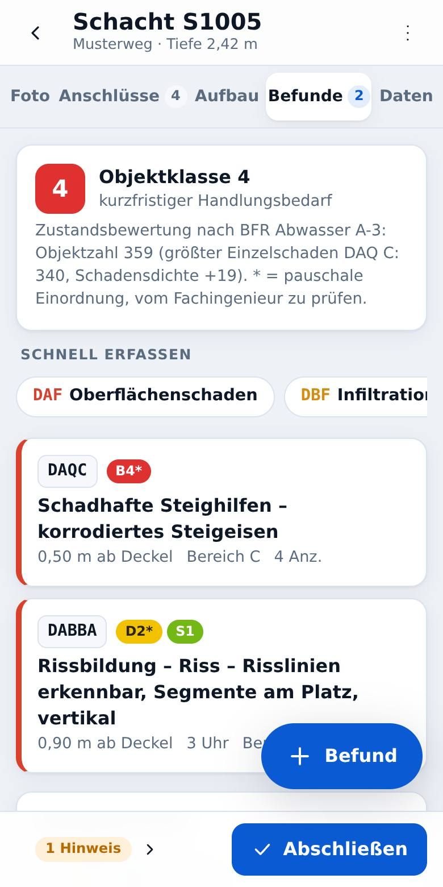
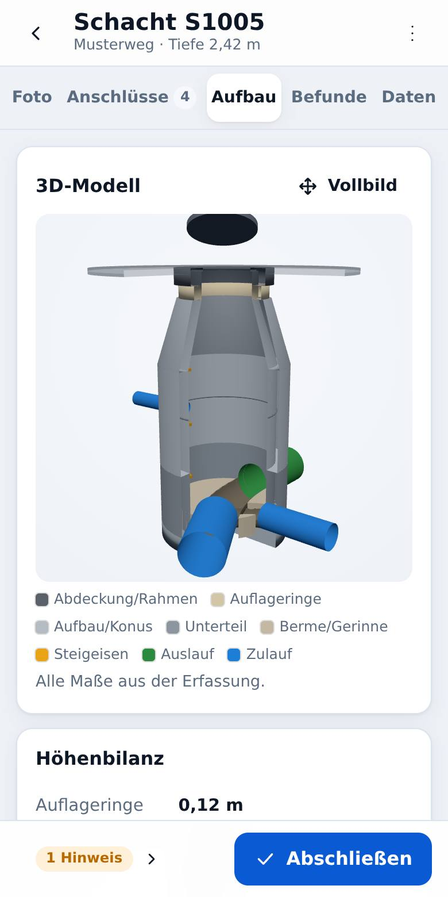

So funktioniert die Schachtinspektion mit Schachtblick
- Stammdaten importieren: ISYBAU-XML (2006, 2013, 2017, 2024) oder DWA-M 150 – Schächte, Tiefen und Haltungen sind sofort da, auf Wunsch mit der letzten Inspektion. Ohne Datei legen Sie Schächte einfach von Hand an.
- Foto von oben: Die Uhr wird auf den Schacht gelegt, der Auslauf steht bei 12 Uhr. Anschlüsse tippen Sie direkt im Foto an; Lage und Höhe aus den Stammdaten werden zugeordnet.
- Messen mit dem Laser: Schachttiefe, Lage der Schäden, Bauteilmaße – Feld antippen, am Bluetooth-Laser auslösen, der Wert steht im Feld und der Cursor springt weiter. Kein Abtippen, keine Zettel.
- Schäden kodieren: Katalog nach DIN EN 13508-2 mit nationaler Festlegung (BFR Abwasser 01/2025 bzw. DWA-M 149-2), Plausibilitätsprüfung, Streckenschäden, Uhrzeiger-Lage.
- Ergebnis abgeben: Zustandsklasse nach BFR Abwasser Anhang A-3, PDF-Schachtprotokoll mit Ihrem Logo, Aufmaß als PDF oder Excel – und mit Pro die Austauschdatei für den Auftraggeber.
Aus der App


Was Schachtblick kann
Bluetooth-Laser
Messwerte direkt vom Laser-Entfernungsmesser ins angetippte Feld – im Tastaturmodus auf jedem Handy (auch iPhone), günstige Leica- und Bosch-Laser auch direkt verbunden.
Kodierung nach Norm
DIN EN 13508-2 mit ISYBAU- bzw. DWA-M-149-2-Festlegung, Prüfung der Pflichtangaben wie im Kodierhandbuch.
Zustandsklassen
Bewertung je Befund und Objektklasse 0–5 nach BFR Abwasser Anhang A-3.
Bauteile & 3D
Abdeckung, Auflageringe, Konus, Unterteil, Gerinne, Steighilfen – mit Höhenbilanz und 3D-Modell.
Protokoll & Aufmaß
PDF-Schachtprotokoll mit Fotos und Firmenlogo, Aufmaß nach Tiefenstaffel als PDF oder Excel.
Karte
Alle Schächte auf der Karte, Status auf einen Blick, Navigation zum nächsten Schacht.
Offline
Funktioniert ohne Netz; Daten werden auf dem Gerät gespeichert. Keine Cookies, kein Tracking.
Kostenlos – oder Pro für das Team
Schachtblick Basis
ohne Anmeldung – alle Daten bleiben auf Ihrem Gerät
- Import, Foto, Kodierung, Zustandsklassen
- Messen mit dem Bluetooth-Laser
- PDF-Schachtprotokoll und Aufmaß
- Bauteile, 3D-Modell, Karte
Schachtblick Pro
ohne Umsatzsteuer (Kleinunternehmer nach § 19 UStG), inkl. 3 Benutzer, monatlich kündbar
- alles aus Basis
- Export ISYBAU-XML 2006–2024 und DWA-M 150 mit Fotos
- Firmenkonto: Handy, Tablet und PC gleichen sich ab
- Benutzer einladen, Firmendaten zentral
Häufige Fragen
Ist Schachtblick wirklich kostenlos?
Ja. Schachtblick Basis ist dauerhaft kostenlos und ohne Anmeldung nutzbar. Kostenpflichtig ist nur Pro mit Firmenkonto, XML-Export und Abgleich zwischen Geräten.
Muss ich etwas installieren?
Nein. Schachtblick läuft im Browser (Chrome, Safari, Edge, Firefox). Auf dem Handy können Sie die App über „Zum Startbildschirm hinzufügen“ wie eine normale App starten.
Wo liegen meine Daten?
In Basis ausschließlich im Speicher des Browsers auf Ihrem Gerät – niemand sonst kann sie sehen. Mit Pro zusätzlich im Firmenkonto auf einem Server in Deutschland; jede Firma sieht nur ihre eigenen Daten. Mehr in den Datenschutzhinweisen.
Welche Formate werden unterstützt?
Import: ISYBAU-XML 2006, 2013, 2017, 2024 und DWA-M 150, jeweils auch mit Vorinspektionen. Export (Pro): ISYBAU-XML 2006, 2013, 2017, 2024 – geprüft gegen die offiziellen XSD-Schemata – und DWA-M 150 Typ B, jeweils mit Fotos als ZIP.
Welche Laser-Entfernungsmesser funktionieren?
Mit Tastaturmodus (Bluetooth-HID) – auf Android, iPhone, Tablet und PC: z. B. Leica DISTO X3, X4, D5 oder Stabila LD 530 BT. Der Laser wird in den Bluetooth-Einstellungen wie eine Tastatur gekoppelt; Schachtblick versteht „2,345“, „2.345 m“ und „2345 mm“. Direkt verbunden (Beta, Chrome oder Edge auf Android, Windows, Mac): auch günstigere Laser ohne Tastaturmodus, z. B. Leica DISTO D1, D110, D2 oder Bosch GLM 50-27 C – in der App unter Einstellungen → „Laser verbinden“. Safari auf iPhone/iPad kann keine direkte Bluetooth-Verbindung; dort bitte einen Laser mit Tastaturmodus verwenden.
Funktioniert das auch ohne Netz im Schacht?
Ja. Nach dem ersten Aufruf arbeitet die App offline. Mit Pro wird automatisch abgeglichen, sobald wieder Netz da ist.